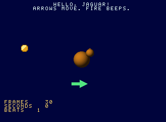

WRITE V AND GET A CARTRIDGE IMAGE.
THE ASSEMBLER IS A V MODULE.
jagkit is a small V module for making Jaguar programs without an assembler. You write V; V emits the .jag image. V is the macro language: a function that calls assembler methods is a macro, a for loop unrolls code, and a constant is an assembly-time constant. V computes the data too: sine tables, palettes, sprites and whole songs are generated at build time. Nothing is loaded from asset files.
TWO ASSEMBLERSOne for the 68000, one for the GPU and DSP. An instruction is a method call, a label is a string, a register can have a name that means something. |
DISPLAY LISTSDescribe the bitmaps; the list comes out laid out, linked and guarded for NTSC or PAL. |
READY-MADE ROUTINESA pad reader, text printing with a font, a three-voice DSP synthesizer. |
THE DULL PARTSThe hardware register map, nearest-colour matching into CRY, a memory layout check and a |
import jagkit { abs, at, imm, inc, lbl, ptr } m.move(.w, lbl('ball_x'), d0) m.add(.w, imm(2), d0) m.cmp(.w, imm(288), d0) // flags of d0 - 288 m.b(.hi, 'skip') // branch if d0 > 288, unsigned m.move(.w, d0, lbl('ball_x')) m.label('skip')
The inner loop of plasma, ten instructions a pixel. The last one rides in the delay slot: it runs after the jump either way, without disturbing the flags.
g.label('pixel') g.loadb(across, colour) g.addqt(1, across) g.loadb(slant, other) g.addqt(1, slant) g.add(other, colour) g.add(row_wave, colour) g.storeb(colour, target) g.subq(1, left) g.jr(.ne, 'pixel') g.addqt(1, target) // delay slot
Errors are collected, not thrown one at a time. Things the processors would not forgive come out when the image is built:
and from an address register, lea of a data register, a byte move to an address register)movei in a delay slotAn accepted instruction is one the processor has: a test assembles every combination of instruction, size and addressing mode and reads the accepted ones back through the emulator's disassembler.
| GROUP | METHODS |
|---|---|
| Moves | move moveq lea push pop swap ext clr move_to_sr |
| Arithmetic | add sub neg cmp tst mulu muls divu |
| Logic and bits | and orr eor not btst bset bclr |
| Shifts | asl asr lsl lsr rol ror roxl |
| Flow | bra bsr b(cc, ...) dbra jmp jsr rts rte stop nop |
| Data | byte word long long_label bytes text align |
| Labels | label unique address_of symbols |
or is spelled orr because or is a V keyword.
 |
just demo hello
# builds demos/hello.jag from V
# then runs it
(The GIF is |
Every demo is built, booted as NTSC and PAL, and played by its test. Tests read the game's variables through the assembler's symbol table and steer. The plasma test works out in V what every pixel should be and compares the buffer, so the GPU program is checked instruction for instruction.
| READ | FOR |
|---|---|
| docs/jagkit.md | the guide: two small programs explained, then the display list, pad, sound, text, GPU, testing |
| docs/jagkit-reference.md | every public name, generated from the source comments |
| demos/ | two examples and three games, each with its .jag and a test that plays it |